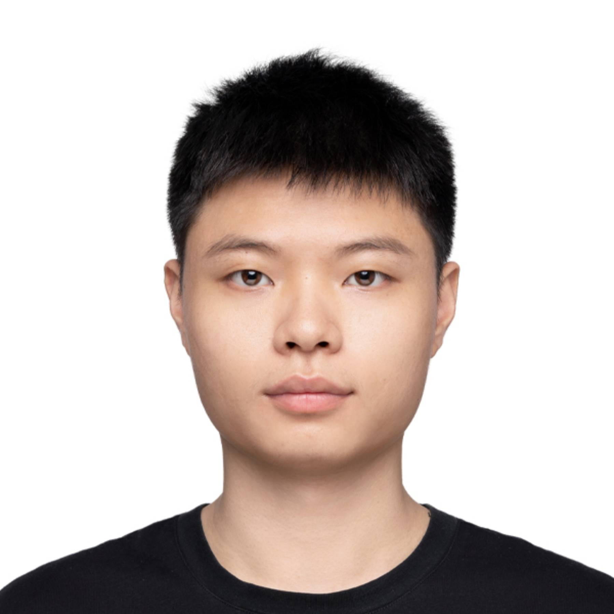
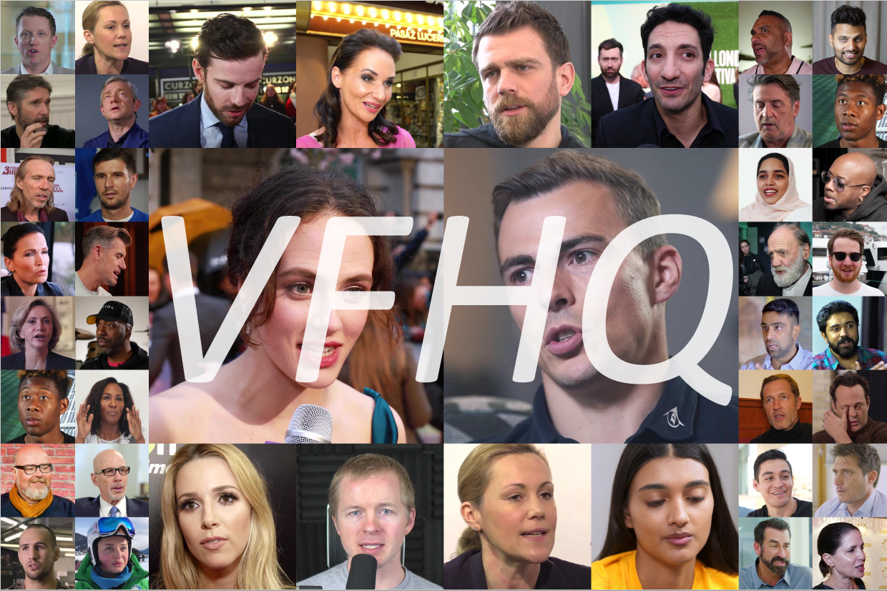

Liangbin XiePh.D. Student
Xpixel Group
|
 |


Biography
My research interests lie in AIGC, especially in Image Generation/Editing.
News
- 2023 April: One paper was accepted by ICML 2023.
- 2022 Nov: One paper was accepted by AAAI 2023.
- 2022 Sept: One paper was accepted by NeurIPS 2022.
- 2022 July: One paper was accepted by ECCV 2022 as oral (2.7%).
- 2021 Dec: One paper was accepted by NeurIPS 2021 as spotlight (2.85%).
- 2020 Aug: EQVI, won the AIM 2020 Challenge on Video Temporal Super-Resolution.
Publications
| StyleAdapter: A Single-Pass LoRA-Free
Model for
Stylized Image Generation Zhouxia Wang, Xintao Wang, Liangbin Xie, Zhongang Qi, Ying Shan, Wenping Wang and Ping Luo. |
|
| T2I-Adapter: Learning Adapters to Dig
out
More Controllable Ability for
Text-to-Image Diffusion Models Chong Mou, Xintao Wang, Liangbin Xie, Yanze Wu, Jian Zhang, Zhongang Qi, Ying Shan and Xiaohu Qie. |
|

|
DeSRA: Detect and Delete the Artifacts of
GAN-based Real-World
Super-Resolution Models Liangbin Xie*, Xintao Wang*, Xianyu Chen*, Gen Li, Ying Shan, Jiantao Zhou and Chao Dong.
International Conference on Machine Learning (ICML), 2023. |
| Mitigating Artifacts in Real-World Video
Super-Resolution
Models Liangbin Xie, Xintao Wang, Shuwei Shi, Jinjin Gu, Chao Dong and Ying Shan.
Proceedings of the AAAI Conference on Artificial Intelligence (AAAI),
2023. |
|
| Rethinking Alignment in Video
Super-Resolution Transformers Shuwei Shi*, Jinjin Gu*, Liangbin Xie, Xintao Wang, Yujiu Yang, and Chao Dong
Advances in Neural Information Processing Systems (NIPS),
2022. |
|
| VQFR: Blind Face Restoration
with Vector-Quantized Dictionary and Parallel Decoder Yuchao Gu, Xintao Wang, Liangbin Xie, Chao Dong, Gen Li, Ying Shan and Ming-Ming Cheng.
International Conference on Computer Vision (ICCV), 2022. |
|
|  | VFHQ:
A High-Quality Dataset
and Benchmark for Video Face Super-Resolution Liangbin Xie, Xintao Wang, Honglun Zhang, Chao Dong and Ying Shan
Computer Vision and Pattern Recognition Workshops (CVPRW), 2022. |

|
Finding
Discriminative
Filters for Specific Degradations in Blind Super-Resolution Liangbin Xie*, Xintao Wang*, Chao Dong, Zhongang Qi and Ying Shan.
Advances in Neural Information Processing Systems (NIPS), 2021. |

|
Real-ESRGAN: Training
Real-World Blind Super-Resolution with Pure Synthetic Data Xintao Wang, Liangbin Xie, Chao Dong and Ying Shan.
International Conference on Computer Vision Workshops (ICCVW), 2021. |
| Enhanced Quadratic Video
Interpolation
Yihao Liu*, Liangbin Xie*, Li Siyao, Wenxiu Sun, Yu Qiao and Chao Dong.
European Conference on
Computer Vision Workshops (ECCVW), 2020.
|
|
Service
-
Conference Reviewer: CVPR, ICCV, ECCV, ICLR, NIPS, etc.
-
Journal Reviewer: TPAMI, IJCV, TNNLS, TMM, etc.
Acknowledgment
I have been fortunate to work with these wonderful people who generously provided me with mentorship..|
|